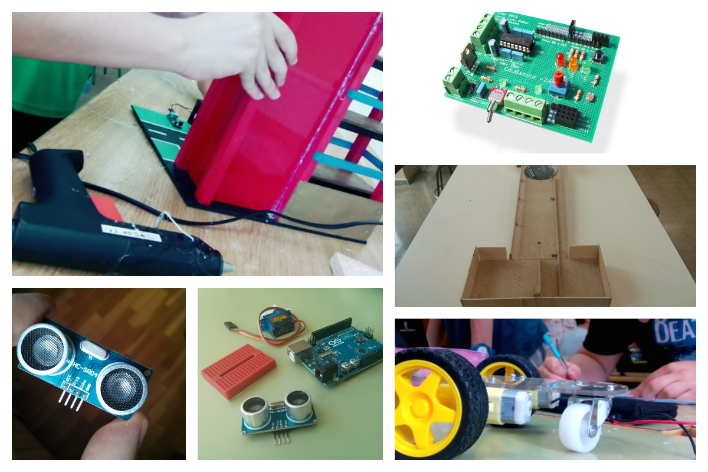

Prácticas con Arduino para 4º de ESO

Este manual de prácticas supone una aventura y una nueva forma de enfocar el material educativo. En él se recopilan prácticas y proyectos que encajan perfectamente en un currículum estándar de 4º de ESO (alumnos de entre 15 y 16 años) para la materia de Tecnologías. Se trata de una herramienta didáctica que facilite implantar una metodología en el aula basada en proyectos. Como núcleo central para el control electrónico de los proyectos se va a utilizar la tarjeta controladora Arduino (http://arduino.cc/). Se ha elegido esta placa por tener licencia libre, bajo coste y alcance a nivel mundial. Esto permitirá encontrar bibliografía adicional para complementar la información de los proyectos sin ninguna dificultad ya que existe una comunidad de millones de usuarios por todo el mundo.
Tanto el material fungible necesario para implementar los proyectos en el taller de Tecnologías (componentes electrónicos o estructuras), como la propia tarjeta Arduino se podrán obtener de forma sencilla y barata a través de internet o en tiendas físicas de electrónica.
En todas las prácticas propuestas hemos utilizado las tarjetas Arduino y EduBásica. Ambas placas son de bajo coste y de hardware libre. EduBásica es una tarjeta diseñada por los autores del manual y complementaria a Arduino que incorpora la mayoría de componentes necesarios para que el alumno pueda realizar las prácticas básicas de electrónica. No obstante, todas las prácticas se pueden realizar si necesidad de tener esta placa. Las conexiones de los montajes se pueden realizar en una placa protoboard externa a Arduino. La idea fundamental de la placa Edubásica es evitar tener que realizar estos montajes externos que añaden desorden en el taller y son fuente común de errores.
Pretendemos, por un lado, optimizar los recursos económicos y, por otro, procurar una valiosa fuente de procedimientos didácticos atractivos para el alumnado. Estamos seguros de que el material ofrecido a los alumnos debe ir cambiando al igual que van modificándose sus canales de comunicación y percepción.
El libro en papel no es ya atrayente y ofrece pocas posibilidades de desarrollar una interactuación a la que ellos ya están habituados. Este libro de prácticas ofrece una nueva interfaz con vídeos, imágenes y ejercicios interactivos que se adapta mejor a las formas de comunicación del alumnado actual.
Estamos por tanto poniendo un material a su alcance acorde a su contexto y a su forma de percibir la información. El futuro de la educación pasa por que el alumno disponga de un dispositivo móvil y sus libros sean interactivos. No quisiéramos dejar pasar otra de las grandes ventajas de este sistema de publicación: el dinamismo. Se trata de un libro “vivo” que puede modificarse y cuyo contenido puede actualizarse con el paso del tiempo, por lo tanto, nunca quedará obsoleto. Este es un libro de Tecnología hecho por tecnólogos docentes usando las mejores herramientas tecnológicas. Ponemos la Tecnología al servicio de la educación y la utilizamos como vehículo para integrar y entender la ciencia.
El equipo de Prácticas con Arduino para 4º de ESO.